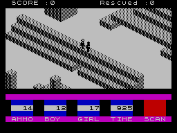

<meta charset="utf-8">
<meta name="viewport" content="width=device-width, initial-scale=1">
<title>{{title}}</title>
<link rel="preconnect" href="https://fonts.googleapis.com">
<link rel="stylesheet" href="https://fonts.googleapis.com/css2?family=Lato:wght@400;700;900&family=IBM+Plex+Mono:wght@400;500&display=swap">
<style>
:root{
  --bg:#23262d; --paper:#e9e7e1; --surface:#ffffff; --surface-2:#f1efea; --line:#d5d3cc; --line-soft:#e0ded8;
  --ink:#2f3136; --ink-soft:#55585f; --ink-mute:#80838a;
  --link:#1f5fa8; --link-hover:#154480; --accent:#1f5fa8;
  --amber:#c25a00; --cyan:#1f5fa8; --coral:#d04a3a; --green:#2a8a4a; --violet:#4a5bd6; --hl:#fff0c2;
  --chip:#2f3136; --chip-ink:#ffffff;
  --c64blue:#40318d; --c64grey:#686868;
  --fd:'Lato',system-ui,sans-serif; --fb:'Lato',system-ui,sans-serif; --fm:'IBM Plex Mono',ui-monospace,Menlo,monospace;
  --col:1080px; --gx:68px; --fs:17px; --lh:1.6; --hw:900; --h1:46px; --h2:26px; --sy:48px; --pp:26px; --r:10px;
  --plate-shadow:0 1px 2px rgba(0,0,0,.05),0 4px 14px rgba(0,0,0,.05);
}
*{box-sizing:border-box}
html{background:var(--bg);min-height:100%}
body{background:var(--paper);color:var(--ink);font-family:var(--fb);font-size:var(--fs);line-height:var(--lh);max-width:var(--col);margin:0 auto;min-height:100vh;padding:0 0 4rem}
h1,h2,h3{font-weight:var(--hw);letter-spacing:-.01em;text-wrap:balance;color:var(--ink);margin:0}
.wrap{padding:0 var(--gx)}
.hero{padding:48px var(--gx) 8px;text-align:left}
.eyebrow{font-family:var(--fm);font-size:12px;letter-spacing:.08em;text-transform:uppercase;color:var(--ink-mute);margin:0 0 10px}
.hero h1{font-size:var(--h1);line-height:1.15;letter-spacing:-.02em;margin:0 0 14px}
.hero .sub{margin:0 0 .6em;color:var(--ink-soft)}
section{padding:var(--sy) 0 24px}
section:last-of-type{border-bottom:none}
.fig{font-family:var(--fm);font-size:12px;letter-spacing:.08em;text-transform:uppercase;color:var(--ink-mute);margin:0 0 10px}
h2.t{font-size:var(--h2);margin-bottom:12px}
.lede{color:var(--ink-soft);margin:0 0 30px}
.plate{background:var(--surface);border:1px solid var(--line);border-radius:var(--r);padding:var(--pp);box-shadow:var(--plate-shadow)}
.cap{font-size:14px;color:var(--ink-mute);margin-top:14px;line-height:1.55}
.cap b{color:var(--ink);font-weight:700}
code{font-family:var(--fm);font-size:.82em;background:var(--chip);color:var(--chip-ink);border-radius:4px;padding:2px 6px;overflow-wrap:break-word;-webkit-box-decoration-break:clone;box-decoration-break:clone}

</style>
<style>
:root{--accent:#915900;--link:#755100} .plate{margin:18px 0} .two{display:grid;grid-template-columns:1fr 1fr;gap:18px}.two>*{min-width:0}img.screen{display:block;width:100%;image-rendering:pixelated;border-radius:6px}canvas{display:block;max-width:100%;height:auto;background:#f8f6ee;border-radius:6px} .bar{display:flex;gap:9px;flex-wrap:wrap;align-items:center;margin:14px 0}button,select,input{font:inherit}button,select{padding:7px 11px;border:1px solid #bdb8aa;border-radius:5px;background:#fff;color:#302e27;cursor:pointer}button[aria-pressed=true]{background:#393e36;color:white}button:focus-visible,select:focus-visible,input:focus-visible{outline:3px solid #a25c00;outline-offset:3px}label{display:inline-flex;gap:8px;align-items:center}output,.mono{font-family:var(--fm);font-size:.85em}.small{font-size:14px;color:var(--ink-soft)} .wide{width:100%}table{width:100%;border-collapse:collapse;font-size:15px}td,th{text-align:left;padding:8px;border-bottom:1px solid #d7d0c1}.keys{display:flex;gap:8px;flex-wrap:wrap}.caption{font-size:14px;color:#656157;margin:12px 0 0} .signal{height:70px;background:#222}.error{color:#a21d12} .aa-pick{display:flex;gap:7px;align-items:center;max-width:100%;min-width:0}.aa-pick select{min-width:0;flex:1;width:240px;max-width:calc(100% - 78px)}.bar>*{max-width:100%;min-width:0} .aa-pick select{max-width:75%}h3{font-size:20px;margin-top:24px}a{color:var(--link)} .badge{font-family:var(--fm);font-size:13px} .stats{font-size:22px;font-weight:700} @media(max-width:720px){:root{--gx:18px;--h1:36px;--sy:32px}.two{grid-template-columns:1fr}.hero{padding-top:30px}table{font-size:13px}td,th{padding:6px}.plate{padding:14px}}
</style><!-- tabs --><header class="hero"><p class="eyebrow">ZX Spectrum · 1983 · Quicksilva</p><h1>{{title}}</h1><p class="sub">The masks, picture bytes, and drawing instructions behind the moving figures.</p></header><main class="wrap"><section id="shapes"><h2 class="t">The moving shapes</h2><p>Each shape is sixteen pixels wide and sixteen high. A byte holds eight pixel bits. A mask preserves parts of the background, then the picture bytes add the shape. Changing the background makes the two operations visible.</p><div class="plate"><div class="bar"><span class="pick aa-pick"><button id="shape-prev" aria-label="Previous shape">‹</button><select id="shape" aria-label="Shape record"></select><button id="shape-next" aria-label="Next shape">›</button></span><label>Background <select id="background"><option value="dither">Dither</option><option value="white">White</option><option value="black">Black</option></select></label><button id="animate" aria-pressed="false">Animate walking</button></div><canvas id="sprite" width="576" height="192" aria-label="Mask, bitmap, and composite for the selected shape"></canvas><p id="shape-info" class="small"></p><p class="caption">Left: mask. Middle: picture bits. Right: the composite. All sixty stored records are selectable, including the four retained records at <code>$BC00</code> whose gameplay use is unestablished.</p></div><p>The code links name memory locations. The drawing routine at <code>$80A0</code> reads four bytes per row: left mask, left picture, right mask, right picture. Every record was tested against that routine on a seeded background, with identical output bytes.</p></section><section id="walking"><h2 class="t">A walking frame follows each engine pass</h2><p>The animation routine at <code>$8980</code> alternates frames zero and one while walking. Standing, jumping, falling, and motion delays select other frames. The boy and girl use separate groups; the ants use another pair.</p><p>The Animate walking control alternates the selected direction’s two walking records using sixteen measured pass durations from walking at the first gate, about 160–166 milliseconds each. The game’s pace changes with drawing work and sound; this is that recorded situation, rather than a universal frame rate.</p></section><section id="walls"><h2 class="t">Walls are drawing instructions</h2><p>The wall faces live in code at <code>$8203</code> and <code>$8703</code>. Each instruction draws an edge or a dithered part of a face into the scene buffer. Camera orientation chooses which painter runs.</p><p>The depth map lets the compositor interleave those walls with people, ants, and the grenade. It draws the resulting picture in a linear buffer before copying the view to the Spectrum’s display. <a href="index.html#frame">The rebuilt play screen</a> shows the final result.</p><figure><figcaption class="caption">A contemporary <a href="https://crashonline.org.uk/01/antattack.htm">CRASH review screenshot</a> gives an independent view of the wall dithering and status panel.</figcaption></figure></section></main><script id="targets-data" type="application/json">[[[182,243,1]],[[200,213,3],[198,234,1],[212,195,1],[141,227,1]],[[240,223,5],[192,188,5],[184,157,2],[181,174,6]],[[207,250,3],[241,243,6],[190,254,1],[154,232,2]],[[241,183,1],[224,158,2],[149,176,1],[135,175,2]],[[209,135,1],[185,141,1],[132,140,3],[200,155,2]],[[245,159,6],[145,176,6],[199,173,3],[206,140,4]],[[140,150,3],[221,137,5],[184,147,3],[255,159,2]],[[147,245,4],[154,232,6],[219,145,6],[178,134,4]],[[136,219,3],[240,138,5],[227,225,3],[163,197,6]]]</script>
<script src="../../lib/spectrum.js"></script><script src="../../lib/ay.js"></script>
<script>
'use strict';
const $=s=>document.querySelector(s), targets=JSON.parse($('#targets-data').textContent);
const ready=typeof Spectrum==='undefined'?Promise.reject(Error('The shared Spectrum renderer is available in the built site.')):Spectrum.load('listing.json');
function problem(e){let p=document.createElement('p');p.className='error';p.textContent=e.message;document.querySelector('main').prepend(p);}
function cityAt(m,x,y){return m[0xc000+y*128+x];}
function drawCity(canvas,m,rot,cut,point,plan){const c=canvas.getContext('2d');canvas.width=640;canvas.height=440;c.fillStyle='#f5f2e7';c.fillRect(0,0,640,440);const col=['#d5c8a8','#9a8d70','#6f6555'];
if(plan){const s=3,ox=128,oy=28;for(let y=0;y<128;y++)for(let x=0;x<128;x++){let v=cityAt(m,x,y)&((1<<cut)-1),h=0;while(v){h++;v>>=1;}c.fillStyle=h?['#ebdfc5','#d0c29e','#b9aa83','#9b8964','#78684b','#594a37'][h-1]:'#fffdf7';c.fillRect(ox+x*s,oy+y*s,s,s);}if(point){c.strokeStyle='#b82b3c';c.lineWidth=2;c.strokeRect(ox+point[0]*s-3,oy+point[1]*s-3,9,9);}return;}
const rotate=(x,y)=>rot===0?[x,y]:rot===1?[y,127-x]:rot===2?[127-x,127-y]:[127-y,x];const p=(x,y,z)=>[320+(x-y)*2.25,49+(x+y)*1.12-z*4.5];const face=(pts,fill)=>{c.fillStyle=fill;c.beginPath();pts.forEach((p,i)=>i?c.lineTo(...p):c.moveTo(...p));c.closePath();c.fill();};let blocks=[];for(let y=0;y<128;y++)for(let x=0;x<128;x++){let [u,v]=rotate(x,y),bits=cityAt(m,x,y);for(let z=0;z<cut;z++)if(bits&(1<<z))blocks.push([u,v,z]);}blocks.sort((a,b)=>a[0]+a[1]-b[0]-b[1]||a[2]-b[2]);for(const [x,y,z] of blocks){let a=p(x,y,z+1),b=p(x+1,y,z+1),d=p(x,y+1,z+1),e=p(x+1,y+1,z+1),f=p(x+1,y,z),g=p(x+1,y+1,z),h=p(x,y+1,z);face([d,e,g,h],col[2]);face([b,e,g,f],col[1]);face([a,b,e,d],col[0]);}if(point){let [x,y]=rotate(point[0],point[1]);let q=p(x+.5,y+.5,point[2]);c.fillStyle='#bb243a';c.beginPath();c.arc(q[0],q[1]-5,4,0,7);c.fill();c.strokeStyle='#bb243a';c.beginPath();c.moveTo(q[0],q[1]);c.lineTo(q[0],q[1]-5);c.stroke();}}
function cityWidget(m){if(!$('#city'))return;let rot=0;const round=$('#round'),variant=$('#variant'),cut=$('#cut'),plan=$('#plan'),canvas=$('#city');targets.forEach((t,i)=>round.add(new Option('Rescue '+(i+1),i)));function variants(){variant.replaceChildren();targets[+round.value].forEach((t,i)=>variant.add(new Option('Location '+(i+1),i)));paint();}function paint(){let t=targets[+round.value][+variant.value||0];drawCity(canvas,m,rot,+cut.value,[t[0]-128,t[1]-128,t[2]],plan.checked);$('#city-info').textContent=`Rescue ${+round.value+1}: (${t.join(', ')}) · camera ${rot} · layers 0–${+cut.value-1}`;}
round.onchange=variants;variant.onchange=paint;cut.oninput=paint;plan.onchange=paint;$('#rotate').onclick=()=>{rot=(rot+1)%4;paint();};$('#round-prev').onclick=()=>{round.value=(+round.value+9)%10;variants();};$('#round-next').onclick=()=>{round.value=(+round.value+1)%10;variants();};canvas.onclick=e=>{if(!plan.checked)return;let b=canvas.getBoundingClientRect(),x=Math.floor(((e.clientX-b.left)*640/b.width-128)/3),y=Math.floor(((e.clientY-b.top)*440/b.height-28)/3);if(x>=0&&x<128&&y>=0&&y<128){let v=cityAt(m,x,y);$('#cell-info').textContent=`Column (${x+128}, ${y+128}): ${v} = ${v.toString(2).padStart(6,'0')}₂. Solid heights: ${[0,1,2,3,4,5].filter(z=>v&(1<<z)).join(', ')||'none'}.`;}};variants();}
ready.then(({ram})=>cityWidget(ram)).catch(problem);
</script><script>
ready.then(({ram:m})=>{const walkMs=[161.18,163.48142857142858,161.03314285714285,161.6,165.248,163.04142857142858,161.92942857142856,163.63457142857143,159.92885714285714,159.96657142857143,162.856,161.35771428571428,161.418,165.51314285714287,162.00714285714287,161.37657142857142];const ids=[...Array.from({length:24},(_,i)=>0x68+i),...Array.from({length:36},(_,i)=>0xdc+i)],sel=$('#shape');ids.forEach((id,i)=>sel.add(new Option(`ID $${id.toString(16).toUpperCase()} · $${(0x8000+64*id).toString(16).toUpperCase()}`,i)));let timer=null,walkAt=0;
function draw(){let id=ids[+sel.value],a=0x8000+id*64,c=$('#sprite').getContext('2d');c.fillStyle='#e6e0d3';c.fillRect(0,0,576,192);for(let panel=0;panel<3;panel++)for(let y=0;y<16;y++)for(let x=0;x<16;x++){let k=a+y*4+(x>>3)*2,bit=7-(x&7),mask=m[k],ink=m[k+1],bg=$('#background').value==='white'?255:$('#background').value==='black'?0:y&1?0x55:0xaa,v=panel===0?mask:panel===1?ink:(bg&mask)|ink;c.fillStyle=v&(1<<bit)?'#fff':'#111';c.fillRect(panel*192+x*10+16,y*10+16,10,10);}$('#animate').disabled=!((id>=0x6c&&id<0x80)||(id>=0xdc&&id<0xf0)||id>=0xf8);$('#shape-info').textContent=`ID $${id.toString(16).toUpperCase()}: sixteen rows × four bytes at $${a.toString(16).toUpperCase()}.`;}
function stopWalk(){if(timer)clearTimeout(timer);timer=null;$('#animate').setAttribute('aria-pressed','false');}sel.onchange=()=>{stopWalk();draw();};$('#background').onchange=draw;$('#shape-prev').onclick=()=>{stopWalk();sel.value=(+sel.value+ids.length-1)%ids.length;draw();};$('#shape-next').onclick=()=>{stopWalk();sel.value=(+sel.value+1)%ids.length;draw();};$('#animate').onclick=()=>{if(timer){clearTimeout(timer);timer=null;$('#animate').setAttribute('aria-pressed','false');return;}let id=ids[+sel.value],base=id>=0xdc&&id<0xf0?0xdc:id>=0x6c&&id<0x80?0x6c:0xf8,dir=id&3,frame=0;$('#animate').setAttribute('aria-pressed','true');const tick=()=>{frame^=1;sel.value=ids.indexOf(base+frame*4+dir);draw();timer=setTimeout(tick,walkMs[(walkAt++)%walkMs.length]);};tick();};sel.value=ids.indexOf(0xdc);draw();}).catch(problem);
</script>